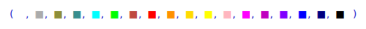
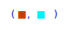
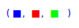
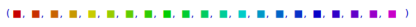
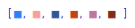

19.1.3 Colors and color functions
Xcas uses RGB565 color encoding from FLTK and is therefore able to
use at most 65536 RGB colors in graphs.
In RGB565 encoding, there are only 32 values for the red and blue
channels and 64 values for the green channel.
The alpha channel (transparency) is not used.
Colors in Xcas are nonnegative integers with a dedicated subtype. They
are evaluated to small colored squares in command line entries.
-
Colors from 0 to 255 correspond to indices in the FLTK colormap
(see here).
- Colors from 256 to 381 belong to the default Xcas
rainbow colormap (see Section 26.3.2).
- Values from 382 to 511 are not assigned.
- Values from 512 to 65535 are RGB colors with channel values
stored in the index. The red channel is read from the upper 5 bits,
the green channel is read from the middle 6 bits and the blue
channel is read from the lower 5 bits.
You can use either one of the predefined colors (see Section 19.1.2)
or create color(s) by using the rgb, hsv and
colormap commands (see below).
For example, to show all predefined colors, enter:
| white,grey,olive,teal,cyan,green,brown,red,orange,
gold,yellow,pink,magenta,purple,violet,blue,navy,black |

The above colors are portable since they are defined in the FLTK colormap.
RGB and HSV colors
The rgb command converts between
color objects and their RGB (Red, Green, Blue) specifications.
-
rgb can take either
-
col, a color object,
- ind, a nonnegative integer, or
- rgb, a RGB color specification given as either
-
a vector of three integers between 0 and 255,
- a vector of three real numbers between 0 and 1,
- a hexadecimal number 0xrrggbb, or
- a hexadecimal string (optionally with the leading # character).
- rgb(col) returns the RGB specification
of col in form of a vector with three integers between 0 and 255.
- rgb(ind) returns the color object
corresponding to the index ind, which may be any number
between 0 and 65535 (for unassigned indices, rgb returns
the black color).
- rgb(rgb) returns the color object which
is closest to the given RGB specification.
The hsv command converts between color
objects and their HSV (Hue, Saturation, Value) specifications.
-
hsv takes either col, a color object,
or hsv, a vector containing either
-
three real numbers in [0,1], or
- three integers h, s and v such that 0≤ h≤ 360 and
0≤ s,v≤ 100 (if other values are given, then hmod360,
min{100,max{0,s}} and min{100,max{0,v}} are used).
- hsv(col) returns the HSV specification
of col as a vector [h,s,v] of integers.
- hsv(hsv) returns the color object closest
to the given HSV specification.
You can convert from RGB to HSV and vice versa by using the
rgb2hsv and
hsv2rgb commands.
-
rgb2hsv takes rgb, a vector of three
integers between 0 and 255 or three real numbers between 0 and 1.
- rgb2hsv(rgb) returns the HSV specification
equivalent to rgb as a vector [h,s,v] of integers between
0 and 360 for h resp. 0 and 100 for s and v.
- hsv2rgb takes hsv, a vector of three
integers between 0 and 360 for h resp. 0 and 100 for s and v,
or three real numbers between 0 and 1.
- hsv2rgb(hsv) returns the RGB specification
equivalent to hsv as a vector [r,g,b] of integers between 0 and 255.
Examples
| rgb("#cf3f00"); rgb(0x00f3fc) |

| b:=rgb(216); rgb(255,0,0); rgb([0.0,1.0,0.0]); |

| seq(hsv(15*h,100,80),h=0..20) |

Colormaps
The colormap command returns built-in
continuous/discrete colormaps or individual colors from the corresponding palettes.
Note that the colors obtained this way are not guaranteed to be portable.
-
colormap takes one to three arguments:
-
"pal", where pal is the colormap name.
The following continous colormaps are emulated from the pals
package in R: magma, inferno, plasma, viridis, jet,
parula, gnuplot, cividis, cubehelix, cyclic1,
cyclic2, cyclic3, cyclic4, phase, isoluminant,
cubic, coolwarm, haline, blues, greens,
greys, oranges, reds, and spectral.
cyclic1-cyclic4 and phase are cyclic palettes.
Only one discrete colormap is implemented: polychrome (alias discrete), which
contains 36 colors listed in Table 19.1. The default Xcas rainbow
colormaps are named default (cyclic) and rainbow (non-cyclic).
Instead of "blues", "greens", "greys", "oranges" or
"reds", you can pass blue, green, grey,
orange or red as the first argument, respectively.
| dark purplish gray | purplish white | vivid red | vivid purple |
| vivid yellowish green | strong purplish blue | vivid orange yellow | vivid purplish red |
| brilliant green | vivid yellow green | vivid blue | brilliant purple |
| vivid violet | strong pink | strong blue | strong reddish orange |
| vivid green | light olive brown | vivid reddish purple | vivid greenish yellow |
| vivid yellowish green | vivid red | vivid purplish red | pale yellow |
| strong reddish purple | vivid violet | vivid yellow green | very light blue |
| strong reddish brown | very light yellowish green | very light bluish green | deep greenish blue |
| vivid purple | deep purple | brilliant blue | vivid violet |
| Table 19.1: Colors in the polychrome palette |
- Optionally, modifiers, a sequence that can
contain inv and/or reverse symbols
for inverting/reversing the colormap colors. This can be used only with continuous colormaps.
- Optionally, either n, a nonnegative integer, t, a real
number in [0,1], or "str", a string.
The latter can be used only with the discrete colormap polychrome.
The string str is a color name or a string which is searched for among
color names.
Alternatively, if pal specifies a continuous colormap,
the last argument can be the symbol display, in which case the colormap is
drawn. In this case pal can also be a list of colormap names, resulting
in the specified colormaps drawn one above another in the same picture.
- colormap(pal ⟨,modifiers ⟩) returns the
colormap index if pal is a continuous colormap or the list of all colors in the palette
if pal is a discrete colormap. The colormap index is used by commands such as
plotfunc (see Section 19.2.1), plotdensity
(see Section 19.5.2) and hht (see Section 21.4.9).
- colormap(pal ⟨,modifiers ⟩,n) returns
n equally spaced colors from a continuous colormap pal.
If pal is a discrete colormap, then the nth color is returned (n is wrapped around
if it exceeds the number of colors in the palette).
- colormap(pal ⟨,modifiers ⟩,t) returns
the color of a continuous colormap pal which corresponds to the value t assuming
that the first and last colors are mapped to 0 and 1, respectively.
- colormap(pal ⟨,modifiers ⟩,str)
returns the list of colors of a discrete colormap pal containing str in their names
(whole-word search is used). If str is a full color name, only that color is returned.
Examples
To visualize some colormaps, enter:
| colormap(["inferno","viridis","phase","cubic","jet"],display) |
The above colormaps do not appear perfectly seamless; this is due to the 16-bit color
coding in Xcas instead of 24-bit RGB888 (which would allow for
millions of colors). Note that clamping colors to 16 bits, which results in a
slight posterization effect, pertains only to Xcas graphic commands,
while images are displayed with exact colors (see Section 28.1.4).
You can invert and/or reverse colors in a colormap, obtaining a new one.
A color is inverted by subtracting its R, G and B values from 255.
For example, to obtain a “frozen” version of the inferno colormap, enter:
| colormap("inferno",inv,reverse,display) |
To get a single color from a colormap, enter e.g.
To get a list of uniformly spaced colors, enter e.g.
| colormap("blues",reverse,20) |
To display the discrete colormap, enter:
| axes=0; gl_ortho=1;
seq(rectangle(k,k+1,2,color=filled+colormap("discrete",k)),k=0..35) |
Useful color combinations can be generated from the discrete colormap
by filtering out groups of similar colors. For example:
| colormap("discrete","vivid") |
| colormap("discrete","strong") |

You could also try passing e.g. "very light", "brilliant", "reddish",
"green", "deep" etc. as the second argument (see Table 19.1).
These and similar color combinations can be useful for categorical data visualization techniques
such as bar plots, pie charts, clustering etc.
Color interpolation and RGB to XYZ conversion
The interp command interpolates between
given colors in the CIE 1931 XYZ color space with the sRGB gamut
(see here for details).
In XYZ space, the Euclidean distance between two colors is roughly proportional to their
perceived difference. Such interpolation is called perceptually uniform.
See Section 17.1.1, Section 17.1.2 and Section 28.1.10 for
other uses of interp.
-
interp takes two or three arguments:
-
colors, which may be either
-
a sequence of two color objects c1 and c2,
- a list of m colors objects c1,…,cm, or
- a matrix of integers with m rows and three columns in which
each row defines a RGB color.
- Either n, a nonnegative integer, or t, a real number or a list of
real numbers in [0,1].
- interp(colors,n) returns n equally spaced colors
on a 3D Bézier curve defined by the XYZ color space equivalents d1,…,dm
of colors c1,…,cm
(see here for
the details on conversion). The output does not include boundary colors c1 and cm.
For instance, for n=1 you obtain the single color at the middle of the curve, while
for n=2 you obtain the colors at one-third resp. two-thirds into the curve.
- interp(colors,t) returns the color(s) on the
parametrized Bézier curve corresponding to value(s) of t such that t=0 resp. t=1
results in c1 resp. cm.
- The type of input matches the type of output.
You cen specify the input as a list of either color objects or RGB triples.
Beware that, if you input color objects, you will get color objects in the output, which are
clamped to 16 bits in order to fit the RGB565 encoding. With a RGB input, interp
returns a RGB matrix which defines a list of RGB888 colors, thus avoiding the loss of
channel information.
You can access the routines for RGB↔XYZ conversion by using the
rgb2xyz and
xyz2rgb commands which take a
list or sequence of three real numbers in [0,1] representing the RGB or XYZ triple
and return the other color specification in the same form. The rgb2xyz command
can also take color objects as inputs. These routines apply chromatic adaptation with
Bradford’s method to make the white color in Xcas the reference white (the default sRGB
reference white is D65); thus the white color corresponds to [1.0,1.0,1.0] and black color
to [0.0,0.0,0.0] in both RGB and XYZ.
Examples
To demonstrate the conversion between RGB and XYZ, enter:
or:
| xyz:=rgb2xyz(0.0,1.0,1.0) |
or:
|
| |
| ⎡
⎣ | 0.561504215261,0.777146370045,0.982679191019 | ⎤
⎦ |
| | | | | | | | | | |
|
To demonstrate color interpolation, enter:
| c:=[red,yellow,green,cyan]:;
interp(c,20) |
The above list consists of RGB565 colors.
To visualize a perceptually seamless transition from red to cyan passing
through yellows and greens, you should convert c to a
RGB matrix, which can be done by using apply and rgb. Enter:
| res:=interp(apply(rgb,c),1000):; |
The output is a 1000× 3 RGB matrix from which you can
create an image by entering:
| r,g,b:=[col(res,0)$100],[col(res,1)$100],[col(res,2)$100]:;
img:=image(3,r,g,b); |
|
| |
an image of size 1000×100 (RGB)
| | | | | | | | | | |
|
To display the result with RGB888 colors, enter:


{kind=link}